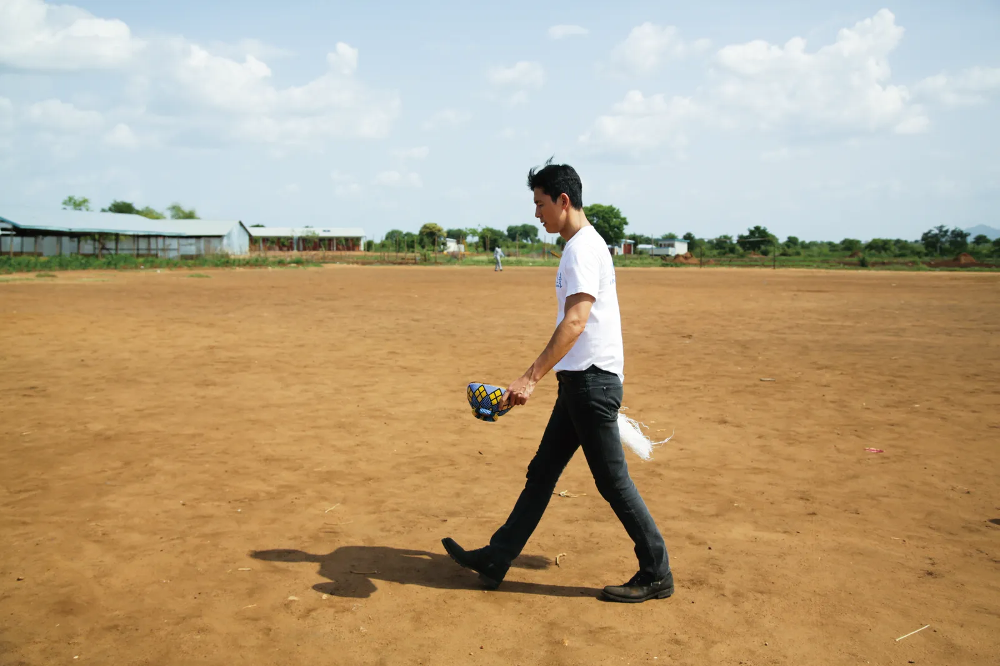
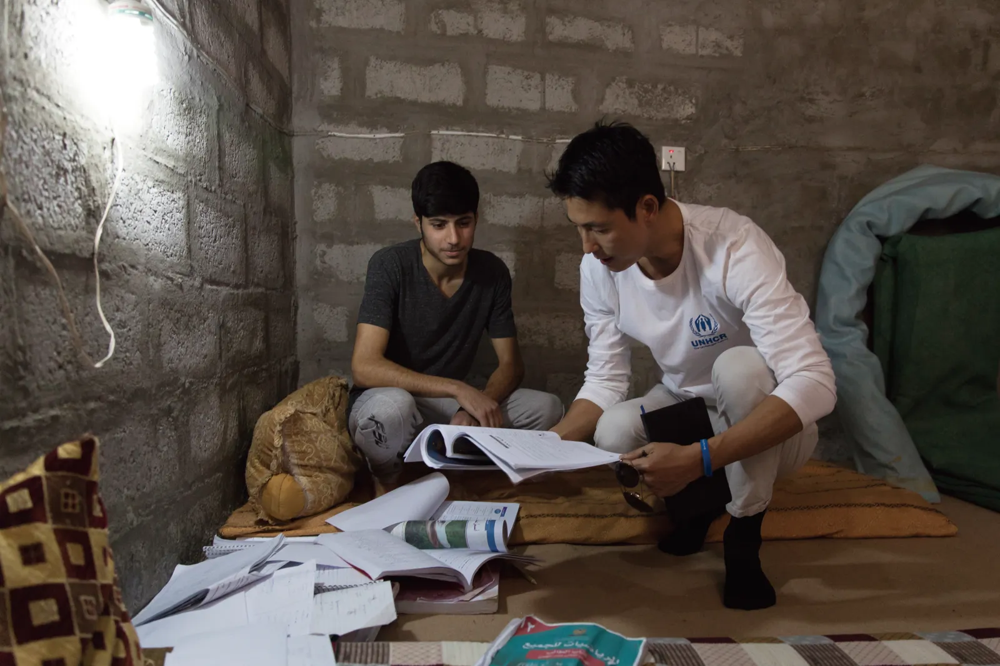
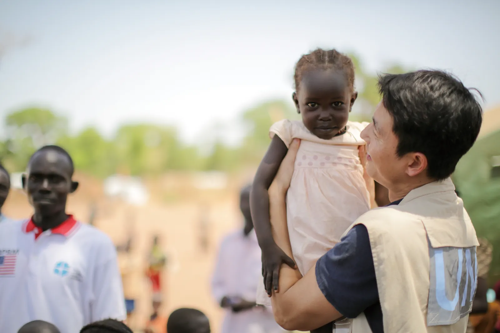
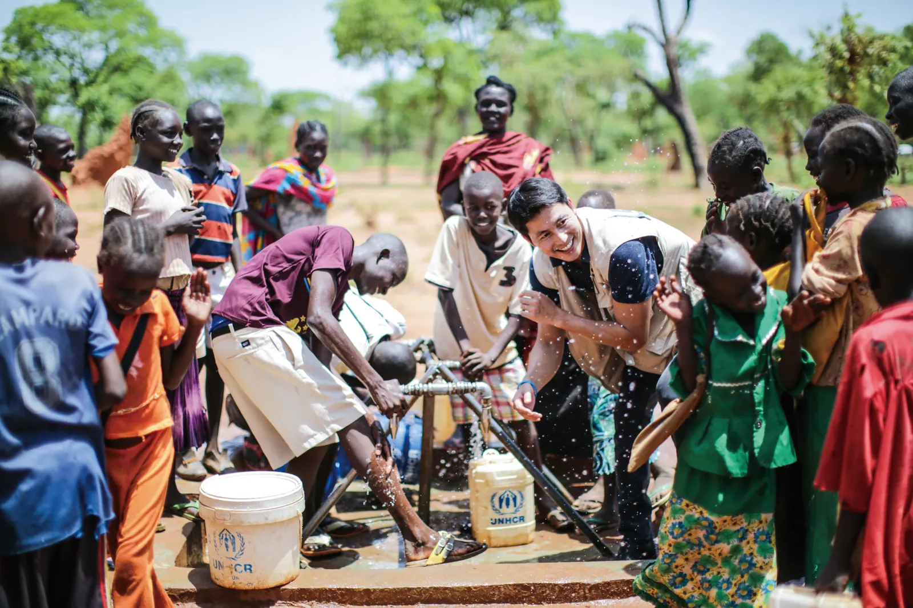
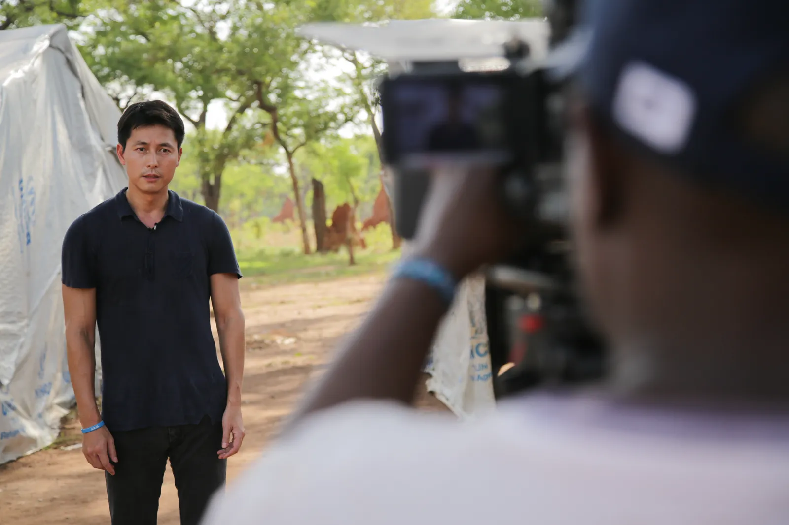
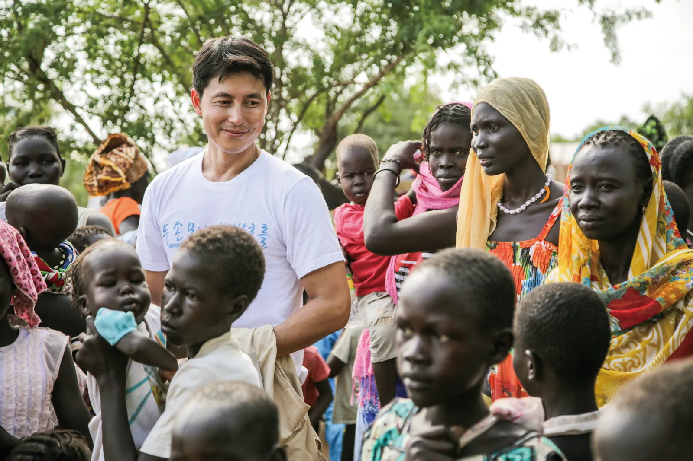
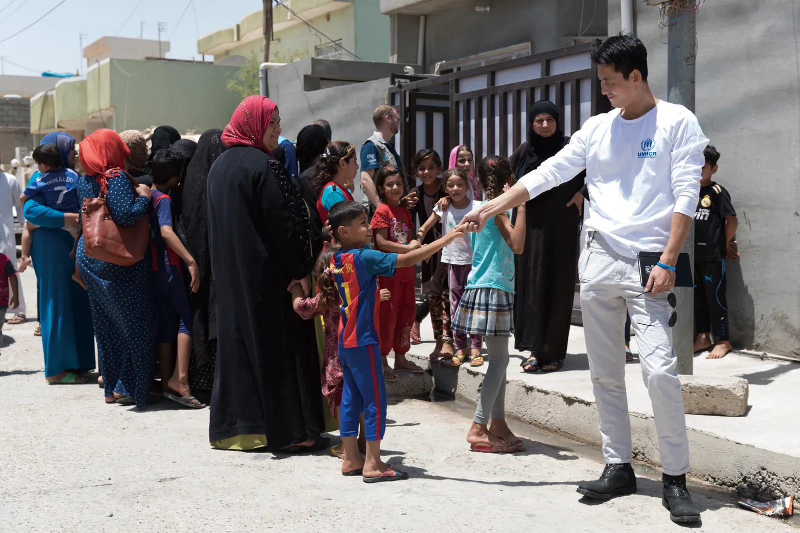
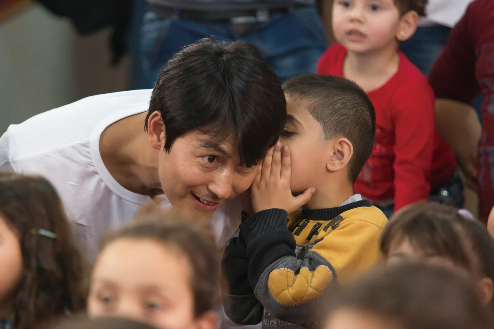
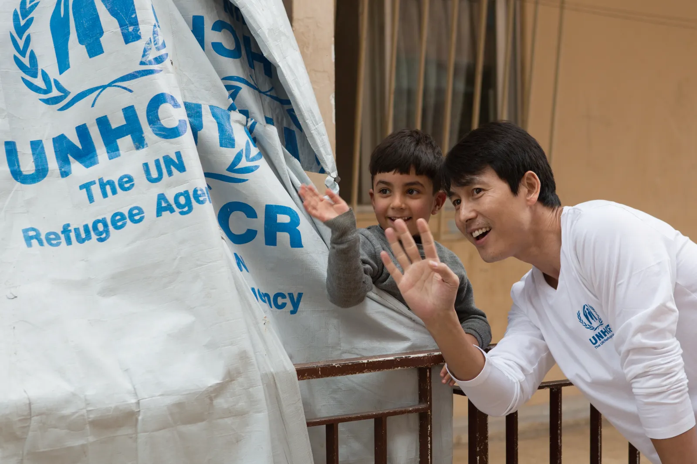

2018年，韓國濟州島來了500多位葉門難民身分申請者，引發韓國社會的強烈反彈，鄭雨盛為了難民的權益挺身而出，儘管因此遭受批評也毫不退縮，持續以開放的心胸參與討論，更上新聞節目《NEWSROOM》探討羅興亞難民議題。

鄭雨盛不僅記錄了5年來與難民互動的故事，也寫下自己對難民問題的諸多思考。藉由本書，他希望人們的關心應該更加擴大，去關注鄰居、社會，以及整個世界，去感受人與人之間強烈的連結，明白相互理解、平等對待有多麼的重要，這本書《走入戰火邊界，我所見的一切：鄭雨盛，與難民相遇》，就讓更多人認識世界難民的處境。

這裡是我去年出訪的孟加拉庫圖帕隆難民營。在這個世界規模最大的難民營裡，住著十幾萬等待重返家園的羅興亞族難民。今天是世界難民日，目前全世界有六千八百五十萬人失去家園，一千六百二十萬人在二〇一七年被迫離開故鄉。今天，請大家心繫難民，理解他們，成為他們的希望。

某幾次參與活動時，我也曾捫心自問：「如果這些難民來到韓國，我們的社會會接納他們嗎？我們能夠產生多大的共鳴？我們的社會，究竟有多理解難民？」正因為我知道這是一個很難立刻產生同理的問題，所以看到這些反應並不覺得驚慌失措，只能說，這樣的情況比我預期得更早發生了，才會出現如此激烈的反彈，我也認為自己有必要去理解持反對立場的人，以理解作為基礎，向他們好好解釋、進而說服他們

其實我只是跟往年一樣，在世界難民日當天發表了一篇呼籲大眾關心難民問題的文章，但不同的是，這次多放了一段聯合國難民署的官方聲明。一位朋友猜測，會不會是那篇官方聲明寫道：「聯合國難民署堅決不允許強制遣返任何一個葉門人。」這點激怒了大家。這也是有可能的，以保護難民為使命的國際機構在發表聲明時，措辭難免會有些強硬，大眾並不熟悉這種表達方式因而感到吃驚。

我認為過去我們之所以能寬容地看待難民問題，是因為我們把它當成「其他國家的問題」，當這個問題來到眼前，我們體認到這是自己的問題後，才終於開始袒露真實的想法。因此，針對眼下發生在我們社會的難民問題，「溝通」顯得尤為重要。我們必須拋開錯誤的訊息，收起毫無建設性的情緒，此時此刻，我們需要面對面坐下來，用對話來解決問題。

在這樣的時間點上，大韓民國所面臨的難民問題並不單純只是難民的問題，其中也包含本國的社會問題。我認為問題的核心不是接受或不接受難民，而是要傾聽那些向國家呼喊：「不要只顧難民，也請照顧一下我們，我們也生活在這裡！」的聲音。

葉門人的難民申請問題促使韓國社會存在的矛盾浮出了水面，我認為這是一個好機會。如果能妥善處理難民問題，我們便會成為更加成熟的大韓民國。經由這次事件，讓我們看到被社會疏遠的階層，希望以此為契機，去幫助這些人。此外，也希望大韓民國藉由這次機會，針對難民和其他各種爭端，在國際社會上扮演更好的角色。

我還貼出聯合國難民署針對濟州島的葉門難民申請者的聲明，並向當時為來到濟州島的葉門難民提供幫助的政府和濟州島民表達感謝。最後提到聯合國難民署的明確立場：因葉門目前正處於嚴重的人道危機中，因此不可強制遣返這些難民申請者。